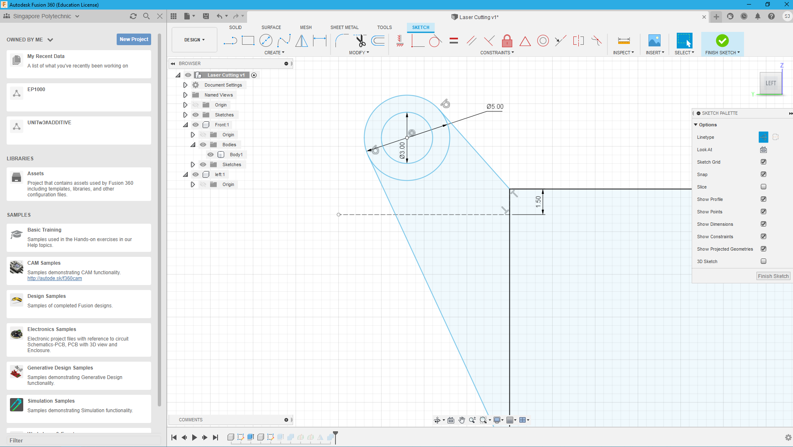

Safety in FabLab
When dealing with machinery that can cause harm or injury , it is important to be trained in the dangers associated with operating the machinery and how to properly operate it. In EP1000, we will be operating lazer cutters and 3D printers both with each of their own hazards. We also learnt about proper procedures in case of an emergency, how do we properly evacuate, react in dangerous situations to be as safe as possible.
Before working with any of these machinery, we had to go through certification quizzes for both lazer cutting and 3D printing online before we can start work. By getting a certain score on the test then we can continue on.
Lasercutting
What is laser cutting?
Lasercutting is where a high intensity laser is used to cut objects,usually thin panels of material, through vaporisation of the laser, thus "cutting" the material.In layman's terms, a form of controlled burning. In EP1000, We will primarily use 3mm thick sheets of plywood to lasercut.
Example of wood used to lasercut
Laser Cutting Design
Lasercutting requires a .DXF file in order for the laser cutting program to translate it into GCode, a form of machine movement language to tell the on board motors how to move to cut the object.But first, a 3d model must be designed to lasercut.
CA2 Laser Cutting
In our assignment, we were required to laser cut a music box designed to fit a music chime.we must first draw a rough idea for the box then translate it to a 3D model.Below is a guide video given by the teacher for us to learn how to make laser cut designs

To assemble a box made with lazer cutting and without the use of glue, tabs are needed to join pieces of wood together.Essentially it is like making a puzzle. There is a "negative" pattern and a "positive" pattern
The "positive" side with protrusions. (This is the base)
The "negative" side with indents/slots the protrusions can fit in. (This is the sides)
When the two sides meet they form a joint , holding the two sides together.
Fusion 360 Design
First the parametric constraints must be set by the user, the constraints that I used are as follow
I keyed in the dimensions that i wanted for the box, the height,length etc.
Using that i sketched out a box with the required number of tabs per side using the formulae given in the video.
I did the same for all sides of the box (except the lid) and used the "combine" tool to cut intersecting sections to form those slots.
Then i proceeded to design the hinge and lid for the music box
With that i have the finished model of the laser cut music box.
Downloadwith that i converted the sides to dwg files and added a vector image for engraving

laser cutting practical
We then went to the FabLab at T11 to do our practical prints for the box
The lecturer taught us the basic settings to cut the stock 3mm plywood that the lab had and also taught us to cut by ourselves a test box
here are the reccommended settings the teacher advised us to use. Essentially in the CorelDraw Program, we select which parts are to be engraved and which parts to be cut out
Engraving is the process where the aser tones down its intensity and does a light 'cut' on the surface' turning the area dark
Cutting is the process where the laser is a the reccommended cutting parameters and cuts through the 3mm thick plywood
this is the test cut that we did, note that the hexagonal pattern is engraved and the square box is cut out from the stock
with that knowledge, we cut the music box
i then assembled the part together
3D Printing
3d printing is a form of additive manufacturing where layers of materials are deposited to create an end product
In this module we will primarily dealing with Fused Depostion Modelling FDM 3d printers. The printers mainlu used in FabLab SP are the ULtimaker 2+
for our CA2 we were tasked to 3D Print a chess piece
i a found a picture of the chess piece online and pasted the image onto a plane , proceeding to outline the shape
.png)
I then hopped on to Fusion 360 to do the designs
.png)
.png) Download
Download
after designing i took the f3d file and converted to stl file for the slicer called CURA to convert the 3d model into movement and instructs how the 3d printer should print
.png)
.png)
as for the print settings, i printed with 10% infill, with supports for overhang angle 50 degrees, and with skirt bed adhesion
.png)
this is the outcome of the print with supports removed and post-processed with sandpaper.